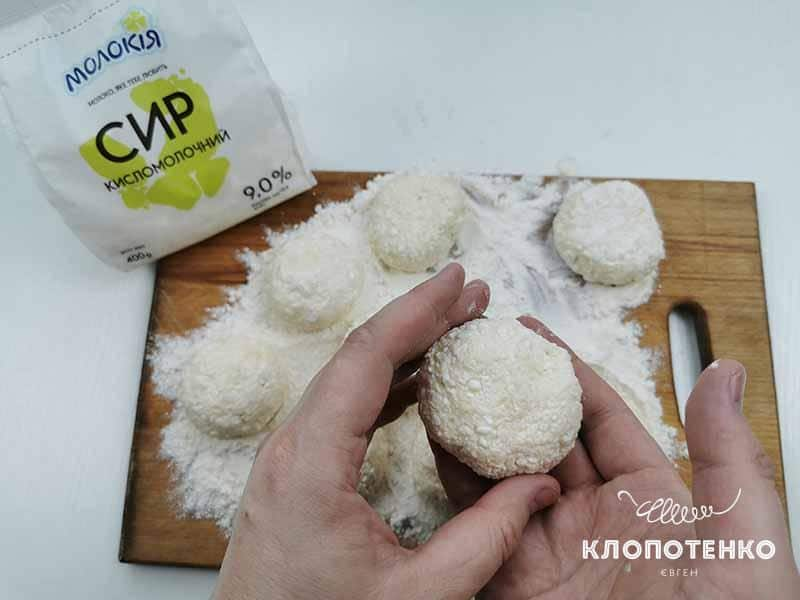

Источник: https://klopotenko.com/syrniki-prostoj-retsept/
РЕЦЕПТ СЫРНИКОВ, КОТОРЫЙ ВСЕГДА ПОЛУЧАЕТСЯ
Простые вещи порой оказываются намного сложнее, чем кажутся. С сырниками та же история. Конечно, для опытных хозяек это блюдо настолько привычно, что и говорить про это не следует. Но, как оказалось, приготовление вкусных сырников дело не такое уж простое и у многих вызывает сложности. Я решил исправить такое положение вещей и хочу поделиться с вами простым рецептом классических сырников, по которому они всегда получаются. А если вы захотите прокачать рецепт, попробуйте приготовить сырники с маком.
КАК ПРИГОТОВИТЬ КЛАССИЧЕСКИЕ СЫРНИКИ
| Кухня | Европейская |
| Время подготовки | 7 минут |
| Время приготовления | 10 минут |
| Порции | 2 |
ИНГРЕДИЕНТЫ
- 400 г Творог («Молокія» 9 % жирности)
- 1 шт. Яйцо
- 3 ст. л. Мука (и дополнительно для панировки)
- 3 ст. л. Сахар
- 3-4 ст. л. Подсолнечное масло для жарки
- 1 щепотка Соль
- 10 г ванильный сахар
ПОШАГОВЫЙ РЕЦЕПТ КЛАССИЧЕСКИХ СЫРНИКОВ
- Творог (400 г) переложите в небольшую стеклянную или пластиковую миску. Добавьте щепотку соли, одно яйцо, 3 ст. л. сахара, и 10 г ванильного сахара. Я не люблю, чтобы сырники были очень сладкими, но вы можете добавить немного больше сахара, например 4 ст. л. Творог для сырников можно использовать как базарный, так и магазинный. Главное, чтобы он был не кислым и сильно влажным. Если используете магазинный творог, то берите творог в мягких полиэтиленовых пакетах. Мои сырники всегда идеально получаются из творога 9 % жирности от «Молокія»
- После того, как вы положите все ингредиенты в миску, перемешайте их до получения однородной массы. Для этого лучше всего использовать обычную вилку, ложку или толкушку для картофеля.
-
К полученной творожной смеси добавьте 3 ст. л. пшеничной муки. Если творог оказался достаточно мокрым,
то добавьте на одну столовую ложку муки больше. Но главное не переборщить, чтобы сырники получились
нежными.

- Смочите руки небольшим количеством подсолнечного масла и скатайте из творожной массы небольшие шарики диаметром 3-4 см. Приплюсните шарики руками, чтобы получились красивые небольшие сырники. 
- Теперь запанируйте сырники в муке, чтобы они не потеряли форму и зажарились до аппетитной корочки.
- Разогрейте антипригарную сковородку с 3-4 ст. л. подсолнечного масла на среднем огне. Сковородка для сырников должна хорошо разогреться. Не уменьшайте огонь при жарке, так у вас получится идеальная прожарка. Следите, чтобы сырники не пригорели. Для того, чтобы получить красивейшую золотистую корочку я обжаривал сырники по 2-3 минуты с каждой стороны. Но у вас может уйти немного больше или меньше времени.
- Чтобы удалить лишнее масло с готовых сырников, переложите их сначала на бумажное полотенце. Затем переложите сырники в тарелки для подачи, посыпьте немного сахарной пудрой, добавьте варенье или сметану.
Готовить – это просто!